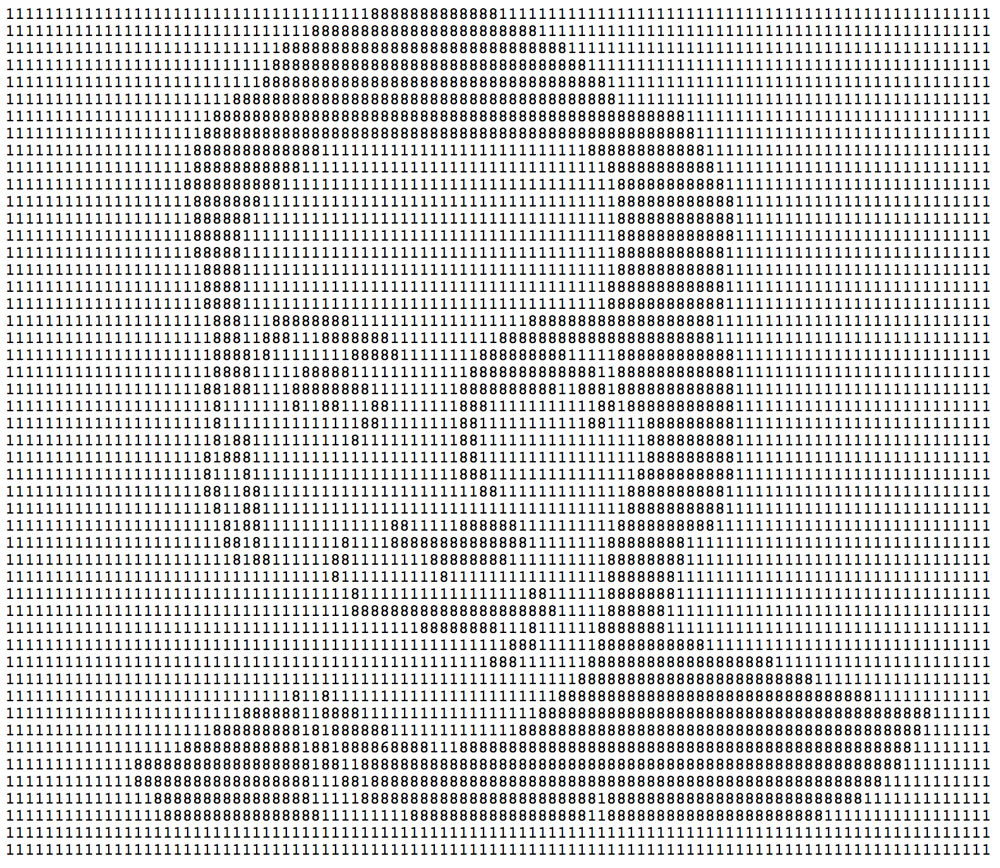

Mi-am propus să ofer în fiecare zi conținut nou: o recomandare de carte, de melodie, o biografie de autor, un citat, o glumă... Astăzi este rîndul:
Anul 2018 marchează centenarul nașterii fizicianului american Richard P. Feynman (1918 — 1988).
Cei de la Fermat's Library au găsit o metodă foarte ingenioasă de a-l sărbători, cu ajutorul unui număr prim de 5000 cifre, format doar din 1 și 8 care, scris într-o formă tabulară, realizează un portret al lui Feynman.
Numărul poate fi găsit aici, dar, dacă rezoluția dispozitivului pe care accesați pagina nu e suficient de mare, imaginea nu se va vedea corespunzător. De aceea, o adaug mai jos.
